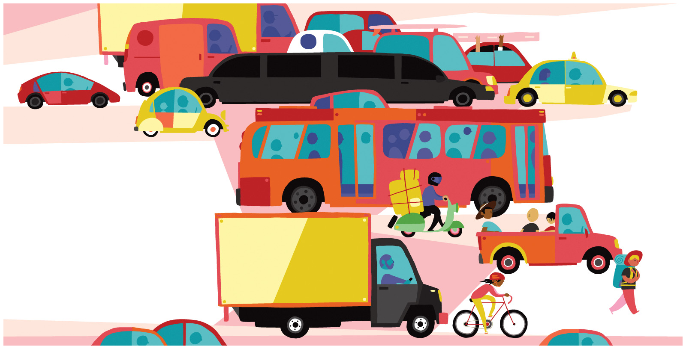

Racial Dot Map¶

As we discussed in this lesson, racial and ethnic segregation is an important aspect of the American landscape. In this exercise, you will examine different patterns of segregation found in metropolitan areas.
Description¶
Visit the Racial Dot Map. Click “Add Map Labels” in the upper left corner unless you are freakily good with geography.
Your research report should respond to the following issues:
On the racial dot map, visit Cleveland, Raleigh, Richmond, and Birmingham. For each city, how would you describe the level of Black-White segregation? Which of the four cities would rank the most segregated? The least?
On the racial dot map, visit Albuquerque, NM and Oxnard, CA. How would you rank the level of Latinx-nonLatinx segregation? How does Latinx-White segregation compare to the Black-White segregation you explored in the four above cities?
Compare your findings with a statistical analysis of segregation in these six cities. How weel did you estimates match with the statistical analysis?
Finally, explore more fully one zone from one of these six cities. Your focus could either be the border between two racially different neighborhoods or some sort of surprising racial/ethnic concentration. Go over to Google Maps and locate the place. Use Street View to help get a sense of the neighborhood. Describe what you researched and what you found. Where appropriate, use pictures in your report.
Requirements¶
Your research report should be at least 250 words long and detail your responses to each of the four questions above.
No late assignments will be accepted.
Grading¶
Grading is High Pass (100); Pass (87) and Fail (0). Students who do not satisfactorily complete the exercise (i.e, Fail) will be allowed to revise and resubmit their application for a Pass within one week.
To be eligible for a High Pass, you must go substantially beyond the assignment requirements both in terms of research and analysis. To qualify for a High Pass, you must include a section at the front of your paper called “High Pass” with at least 50 words detailing how you exceeded the requirements.